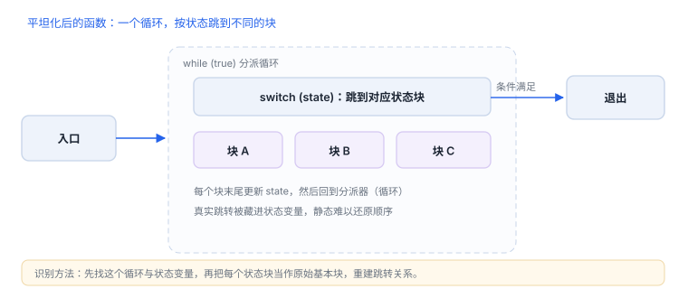

混淆与反混淆阅读
混淆不隐藏“代码在哪”，它破坏的是“读起来像什么”
混淆有四类，成本从低到高。识别它们的方法很固定：找解密桩、找分派器、找无意义跳转；而反混淆的核心不是写脚本，而是先确定边界，再逐层还原。
1. 四类混淆
| 类型 | 做法 | 识别特征 | 还原难度 |
|---|---|---|---|
| 名称 | 类名方法名替换为随机串 | 符号存在但语义不可读 | 低 |
| 字符串 | 密文存储，运行时解密 | 统一的解密桩 + 大量常量数组 | 低到中 |
| 控制流 | 分支改为状态机分派 | 大循环 + switch/间接跳转 + 状态变量 | 中到高 |
| 指令级 | 自定义虚拟机解释字节码 | 取指—译码—执行的解释器循环 | 高 |

2. 从哪入手
- 先找边界：导出符号、协议方法、通知与 URL 入口，混淆很少覆盖这些“必须对外”的点。
- 找解密桩：被大量调用的短函数，参数是常量地址，返回字符串。
- 找分派器：控制流平坦化的核心是一个按状态跳转的循环，先把它标出来，再还原每个状态块。
- 动态验证：静态看不懂的分支，用断点确认实际走向，避免在死代码上耗时间。
3. 字符串还原
思路：定位解密函数，批量取值（自有样本）
# 伪代码：识别“输入常量地址、输出字符串”的桩
# 1) 找到被调用次数最多的短函数
# 2) 在桩的返回处下断点，记录 (入参, 返回串)
# 3) 用参数去重，得到一张常量表关键是“调用点 + 参数”而不是“算法”。多数实现最终都是异或或简单置换，拿到明文后算法本身就不再重要。
4. 控制流还原
| 现象 | 含义 | 处理 |
|---|---|---|
| 函数体是一个 while + switch | 状态机平坦化 | 按状态块拆分，重建跳转关系 |
大量 br 到计算出的地址 | 间接跳转混淆 | 记录实际目标，逐步收敛 |
| 分支条件恒真/恒假 | 不透明谓词 | 用动态执行确认哪条路径可达 |
| 解释器循环 + 字节码数组 | 虚拟机保护 | 先提取字节码与指令语义，再考虑模拟执行 |
5. 失败分流
| 现象 | 原因 | 查哪里 |
|---|---|---|
| 反编译结果全红 | 基址或段识别错 | 先修文件加载 |
| 字符串还原出乱码 | 解密需要额外参数（长度、密钥） | 在调用点取全部参数 |
| 改完静态代码行为不变 | 走的是另一份副本或被校验 | 动态确认实际执行地址 |
| 分析量突然爆炸 | 陷入平坦化内部 | 退回边界，按功能划分 |
| 虚拟机里跟丢 | 字节码指针在堆上动态生成 | 记录取指地址与操作码 |
6. 顺序建议
- 名称混淆不影响阅读主干，最后处理。
- 字符串还原收益最高，优先做。
- 控制流还原只在必须看懂某段判定时做，不要全局展开。
- 虚拟机保护先判断“值不值得”，多数情况下换一条路径更快。
还原字符串靠调用点
不必先逆出算法：找到“取常量地址并返回字符串”的桩，在调用点记录入参与返回即可。
不必先逆出算法：找到“取常量地址并返回字符串”的桩，在调用点记录入参与返回即可。
7. 一次真实排查记录：平坦化后读不懂
- 现象：函数只剩一个大循环与状态变量，看不出业务顺序。
- 先找分派器：标出 switch 与状态更新点。
- 再找出口：哪个状态会跳出循环，通常是成功路径。
- 还原关键块：只拆与判定相关的两三个状态，不全局展开。
- 结论与限制：记录“控制流平坦化”，并注明还原只覆盖关键分支。
8. 自测
- 为什么字符串还原的关键是“调用点与参数”，而不是算法？
- 控制流平坦化的核心结构是什么？
- 遇到虚拟机保护，第一步应该做什么？
- 为什么“全局展开控制流”通常是错误策略？